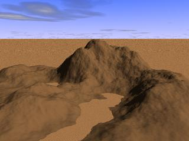
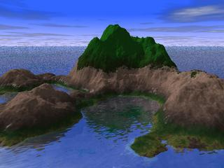
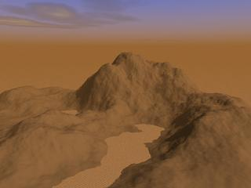

.
.|  |
 |
|  |
|
 |
 |
| À partir de la version 0.40, Geomorph inscrit les
noms des terrains dans des variables prédéfinies dans geomorph.inc: main_terrain = "test.png" ou le
terrain en cours d'édition
water_map = "hf_water.png" ground_map = "ground_map.png" background_map = "hf_background.png" crater_map = "craters.png" |
 Retour à l'index de la
documentation
Retour à l'index de la
documentation